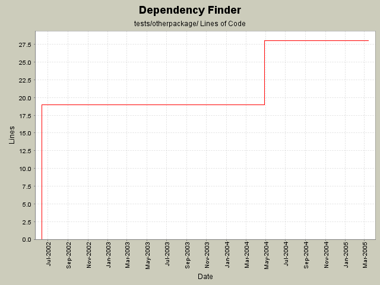

Summary Period: 2002-06-11 to 2005-03-13

Total Lines Of Code:
28 (2006-01-04 08:56)
| Author | Changes | Lines of Code | Lines per Change |
|---|---|---|---|
| jeantessier | 9 (100.0%) | 47 (100.0%) | 5.2 |
Use only spaces for indentation
12 lines of code changed in:
Phase X: naming changes
All test classes and test data
6 lines of code changed in:
Added test data classes to help test dependency metrics
9 lines of code changed in:
Fix dependency metrics measurements
1 lines of code changed in:
Fix incompatible package name
19 lines of code changed in:
Generated by StatCVS 0.2.2